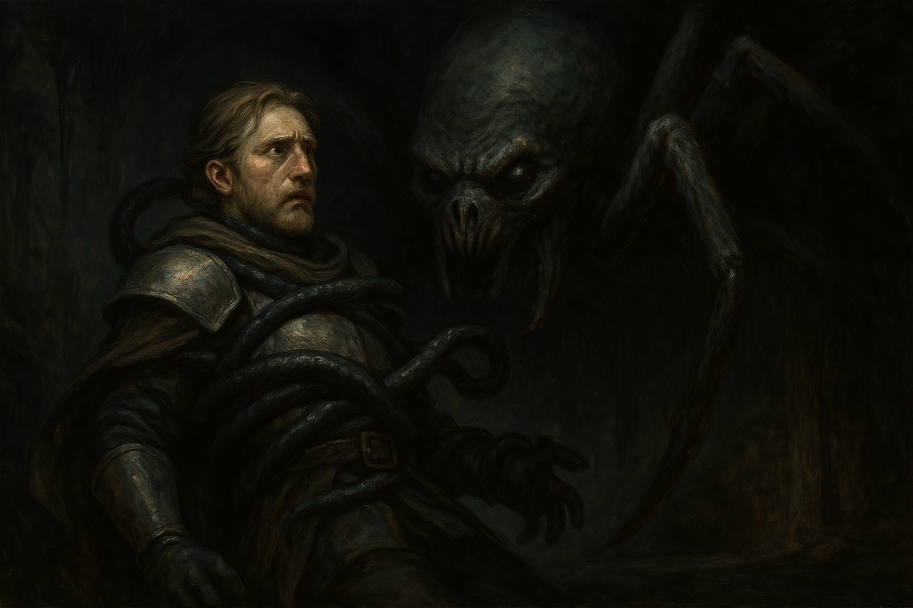

Chapter 3: Count M
The Gift from Alfenor


The Gift from Alfenor
15048.12.03
時間接近中午，冒險者們清醒後，來到了旅店一樓。凱文昨晚顯然沒有拿到伊寫的紙條，只有麵包可以給冒險者們吃。冒險者們拿著麵包回到二樓房間，將麵包分食給還無法移動的圖伊特，以及剛睡醒的華生。
接著，在華生的幫助下，帕拉丁向被起死回生的奧利佛詢問，得到了一些有用的資訊：被關在王宮監獄和蜘蛛神教有關的人，叫瑪莉安・詹斯，以及華生所知的擁王派和反王派鬥爭，和蜘蛛神教沒有直接的關係。聽到瑪莉安・詹斯的名字，華生想起了前一晚在潘蜜拉宅邸認識的神秘貴族馬可斯・詹斯，而伊也意識到，詹斯正是他的雇主，M伯爵的姓氏。
冒險者們將開始散發出一點味道的奧利佛放回圖伊特的背包，毫無生命跡象的伯納德則用厚重的棉被蓋住，以免被凱文或是其他有心人士發現。
在伊的帶領下，冒險者們來到了母親大人的寺廟。伊再三告誡冒險者們，要對母親大人恭敬，也特別提醒帕拉丁不要展現自己貴族的身份。伊輕聲推開寺廟的門，帶著冒險者們跪在母親大人的床前。華生和母親大人先感謝了前一天些除詛咒的事，便說明了來意，但他卻不小心說溜了嘴，將帕拉丁爵士的身份洩漏了出去。
母親大人先將觸手伸往圖伊特的身體，將他凌空抓起，接著告訴他這只是儀式的一部份，他很抱歉。母親大人的觸手將圖伊特整個包住，釋放開來時，圖伊特已恢復原狀，可以正常感知也能正常移動，而且詛咒也消失了，但圖伊特還是感到稍微有些疲憊。
母親大人接著用觸手包住了蘇加魯的後頸，蘇加魯感受到觸手強力的施壓，甚至還有被割出傷口，血液滲出的疼痛感，讓他差一點昏過去，但不久後母親大人便將觸手伸回，而蘇加魯頸後的圖案也消失了。
最後，母親大人伸出了更多的觸手，伸向在暗中看不見的帕拉丁，整個包住，然後騰空架起。「我說了，我討厭貴族！」母親大人發出了極度憤怒的吼叫聲。伊和冒險者們紛紛想辦法安撫與勸服母親大人，希望他不要傷害帕拉丁。最終，母親大人留下了一句話「我不會殺死他的」，接著便朝著床後的空間退去，將包在觸手中，無法動彈也無法說話的帕拉丁一同拉入了虛無之中。
冒險者們趕緊跑到床頭，他們看見了和在伯納德家三樓母親大人床頭相似的符號。在圖伊特的解讀和伊的解釋下，這個符號像是一個地標，但僅僅是紀錄此地的位置。冒險者們討論著是否要賭跳進去這個床後的神秘黑洞，但華生還記得昨晚他的老鼠入洞後，便失去了和他的聯繫，讓他縮手了，於是冒險者們決定先去其他地方尋找線索。
伊提議，帶他們去見一個人，也許對他們會有些幫助，不過在那之前，要先回他的秘密基地，讓他準備一下。在伊的帶路下，冒險者們爬上了牆，又透過繩索，終於爬到了伊位於高處的藏身基地。伊先去換裝，冒險者們則在秘密基地簡單的探索，發現了一些和宗教相關的書籍，裡面對蜘蛛神教相關的內容有加以註記，圖伊特偷偷拿走了一本書。華生也看見了一本記錄冊，裡頭出現了很多名字，但其中他發現有個他認得的名字一再出現，馬可斯・詹斯。
伊換好裝後，從衣櫃拿了他的面具和斗篷。他發現東西似乎有被動過，但質問冒險者時，冒險者們卻紛紛表示自己沒有拿東西。他覺得這些人有點可疑。
伊帶著冒險者們從他熟悉的小路，繞到了M伯爵的宅邸。一座遺世的漂亮花園，沒有任何人，裡頭的別墅看起來優雅而美麗。伊披上斗篷戴上面具，讓冒險者們待在門口，自己先去找M伯爵告知這些訪客。在伊不在的短暫時間，華生也告誡了蘇加魯和圖伊特，這位M伯爵很有可能是他前一晚在貴族晚宴認識的馬可斯・詹斯，但這人似乎能看穿他的魔法，同時也出現在前一晚潘蜜拉等人襲擊伯納德宅邸的場合，因此他對馬可斯並不信任。
伊打開門，讓冒險者們走了進來。大家在大廳等待M伯爵，同時欣賞著他放置的繪畫作品。這些作品看起來製作細膩，主題抽象但又有點神秘，看不出是什麼知名畫家的作品，但要是掛了個名，肯定可以賣很高的價錢。
「嗨，露西亞小姐。」熟悉的聲音傳了過來。華生看見那人的確是前一晚才認識的馬可斯・詹斯，這讓他感到十分警戒。華生也向馬可斯介紹了其他夥伴。大家坐在大廳的沙發上，馬可斯了解了大家的來意後，表示冒險者們可以信任伊，作為他的代表，跟隨著大家冒險。同時，馬可斯也吩咐傭人，請他們準備甜點和各式飲品供冒險者們享用。
帕拉丁睜開雙眼。
「滴、滴、滴……」水滴下的聲音。
「噠、噠、噠……」某種腳步聲。
帕拉丁轉頭，看見一隻老鼠出現在他的視線範圍內，但似乎腳步聲不是來自它。那隻老鼠直挺挺地躺著，是死是活，他不清楚。
接著是一片黑，有東西爬過了他的眼前。一張臉出現在帕拉丁的正前方，緊貼著他，逼得他動彈不得。
「你要付出什麼，來換回你的自由？」那聲音是母親大人的聲音沒錯，但母親大人此時並非以滿臉皺紋的老人面孔展現他的面貌，而是以最原始、令人類感到畏懼的蜘蛛的樣貌，緊盯著帕拉丁。
帕拉丁半開玩笑地伸出他印有詛咒的食指，表示可以收下這個。他也表示自己除了命一條以外，什麼都願意給。
「你的那根手指是我要的，不是給母親大人的。」熟悉的聲音從母親大人身旁傳來，是從瑟巴諾消失的安娜。一陣劇痛，安娜已張口將帕拉丁的食指咬下，嚼了嚼，然後將指甲和骨頭吐掉。「所以你要給母親大人什麼呢？」
帕拉丁試著止痛，但此時恐懼和痛覺兩者並起，帕拉丁一時不知道該說什麼，便又昏了過去。
當帕拉丁再次醒來時，他看見遠處站著一名女子，那人似乎不是安娜，因此他大聲喊叫，希望能獲救。那人趕緊靠近，帕拉丁認得她，是蘿琳。蘿琳看見他的手，關心了一下，帕拉丁這才發現斷指的部分指頭竟然被接上了一節像是昆蟲或節肢動物的指節，銜接處癢癢的，讓他感到很困惑。
蘿琳催促著帕拉丁趕快逃，兩人便在地下水道奔馳。跑了好久，帕拉丁沒有概念到底這個方向對不對，只能盲目跟著蘿琳。中間，蘿琳問了帕拉丁關於龍恩的問題，但帕拉丁無法給予什麼有用的資訊，也只能在情緒上安撫蘿琳。突然，蘿琳朝他昆蟲般的指節咬了下去，然後開始狂笑，帕拉丁嚇了一跳，仔細一看，才發現他眼中的「蘿琳」竟然是安娜喬裝而成的。安娜說著，帕拉丁剛剛還沒說好要給母親大人什麼。她提議，也許可以讓帕拉丁和他結婚，帕拉丁貴族的身份在地面上是很好用的。安娜嘗試用法術控制帕拉丁，但帕拉丁努力對抗，沒有中招。帕拉丁趕緊拔腿就跑，並隨時留意安娜是否跟在後頭。安娜沒有跟上，但帕拉丁在他腦中聽見安娜狂笑，以及說著「來不及啦」。
好不容易找到了一處地面有開口，且地上有夠大的石頭，讓帕拉丁有機會爬上去的機會。帕拉丁從地上搬了石頭，嘗試將身體撐上去，但幾度嘗試都沒能成功，且地面上似乎沒有其他人在活動，叫喊也沒用。帕拉丁急中生智，從背包內拿出他的弓，將弓撐在洞口，再利用繩子綁在弓上，攀著繩子，想將身體撐上去。然而，此時他聽見洞底下熟悉的聲音。安娜碎念著為何不願意娶她？她也年輕貌美，沒什麼壞處。帕拉丁大喊他知道安娜上一任老公，瑟巴諾的鎮長是怎麼死的，他可不想落得一樣的下場。為了脫離險境，帕拉丁趕緊利用法術，在地面上製造荊棘，在阻礙安娜的同時，也讓荊棘將地面上的石頭撐起，他便用力拉起繩子，終於將自己撐到地面上，然後趕快跑走。
地面上，帕拉丁看見在自己眼前的是母親大人的寺廟，他知道非趕快離開不可，附近他比較熟悉的地方是城門旅店，於是他便跑回旅店去。旅店老闆凱文看見他，表示剛剛有個自稱叫蘿琳的女生來找他，他就讓那名女子先去他們房間等待了，同時凱文朝著樓上喊著蘿琳的名字。帕拉丁一聽不妙，趕緊逃走。
離開舊城區，帕拉丁在附近的街區想買點東西，然而他注意到附近其他人看他的眼神都有點古怪，似乎自己衣著有些破爛，身上還有些味道，在這裡十分格格不入。帕拉丁先找了附近的雜貨店，想進去買點藥品，卻被店員擋在店外。帕拉丁簡單描述了自己想要的藥品後，店員自己走到店內去取了藥品，還是賣給了帕拉丁三罐。帕拉丁先服用了其中一罐後將另一罐塗抹在自己的傷口上，傷痛暫時緩解。同時，帕拉丁注意到藥罐的蓋子底部有個眼睛的符號。
接著帕拉丁找了附近的服飾店想買衣服，門口的店員看向他身後，詢問那人是他的老婆嗎？帕拉丁心頭一震，看見在他身後的竟是蘿琳。他趕緊確認這名蘿琳到底是真的蘿琳還是又是安娜的偽裝。蘿琳捏了自己的臉頰，也說了上次在王宮他們逃走後，自己花了好多時間才脫困，暫時讓帕拉丁放心了。蘿琳花了錢，讓帕拉丁先買了簡單的衣服後，找了個巷子快速換裝。
馬可斯・詹斯的宅邸內，冒險者們和馬可斯詢問了關於潘蜜拉、伯納德，以及蜘蛛神教相關的問題。馬可斯說明了伯納德似乎在貴族間是比較弱勢的家族，不過被殺死這件事他也是剛剛聽冒險者們的說明才知道。華生想起昨晚看見潘蜜拉出現在伯納德宅邸前時，也看見馬可斯出現在附近看著，讓他感到馬可斯說的話也許不能完全相信。
馬可斯提議，和華生等人一起去王宮找國王，和國王警告關於潘蜜拉可能的叛變。他提到自己和國王關係並不密切，有個貴族可以一同參與會是比較有效的做法。但華生對於這樣的提議還不太確定是否合適。
伊聽見了客廳門口有奇怪的騷動聲，示意了大家後，悄悄走向門口。大家做好準備，伊便將門打開。眾多刺客在門口試圖跑進來，蘇加魯趕緊跑到門口一一將刺客解決掉，同時華生也召喚出了兩隻殭屍，來到門口做阻擋。圖伊特則在旁邊的窗簾後躲著。
眼看伊被刺客打了幾下，馬可斯趕緊用手上的魔法球，將伊傳送回了他身邊。同時，他請伊到樓上他的辦公桌拿「那一盒」。伊很清楚知道他的M伯爵在說什麼，趕緊用最快的跑速跑了上去，將一盒精緻又有點重量的盒子拿了出來，跑回一樓，遞給馬可斯。馬可斯打開盒子，裡面是個看起來做工複雜的機械，馬可斯小聲說了句「抱歉了半獸人」，接著朝著中心的按鈕按下去，門口附近的地面便落了下去，同時原本通往二樓的樓梯旁冒出了一個走向地下室的樓梯。
蘇加魯落到地下，看見他和其他刺客們以及將失落在一個像是監牢一樣的空間。在華生的協助下，殭屍們堆疊自己的身體，將蘇加魯撐到地面。大家走到地下室，在馬可斯的指引下，對刺客們進行拷問。馬可斯再次丟了一顆魔法球到監牢中。伊仔細看，這顆魔法球比起像水晶球一樣的硬的材質，更像軟泥一般可以塑形。接著華生和伊輪番向刺客們拷問，在馬可斯的操控下只要刺客們有好好回答，便會被電。
他們得知這群刺客是潘蜜拉派出的，潘蜜拉至少有快要100名像這樣的傭兵，他們分別會出不同的任務，昨晚伯納德宅邸的現場就是他們的人。在華生的詢問下，他也得知之前認識的貴族中，馬爾科姆・希克斯似乎也是和潘蜜拉積極合作的其中一人，而亞辛・烏斯塔和衛斯理・凡斯也被他們注意過和潘蜜拉是一夥的，昆頓・里奧納德則似乎沒有被聽見和潘蜜拉討論。潘蜜拉方計畫利用馬爾科姆手下的奴隸們結合他底下的傭兵，一起攻入王宮，發動政變。
最後，馬可斯在華生的建議下，放走了兩名刺客，喬和湯瑪斯，並將其於剩下的刺客電死。
15048.12.03
It was close to noon. After the adventurers woke up, they came to the first floor of the hotel. Kevin obviously didn't get the note written by Yi last night, and only bread can be given to the adventurers. The adventurers took the bread back to the room on the second floor and distributed the bread to Tweeter, who was still unable to move, and Watson, who had just woken up.
Then, with the help of Watson, Paladin asked Oliver who was brought back from the dead and got some useful information: the person who was imprisoned in the palace prison and related to the Spider Cult was called Marianne Jens, and the struggle between the pro-King faction and the anti-King faction known to Watson had no direct relationship with the Spider Cult. Hearing the name Marianne Jens, Watson remembered the mysterious noble Marcus Jens he met at Pamela's mansion the night before, and Yi also realized that Jens was the surname of his employer, Earl M.
The adventurers put Oliver, who was starting to smell a little bit, back into Tweeter's backpack, and Bernard, who showed no signs of life, was covered with a heavy quilt to avoid being discovered by Kevin or other interested parties.
Led by Yi, the adventurers came to The Mother's temple. Yi repeatedly warned the adventurers to be respectful to The Mother, and also reminded Paladin not to show his noble status. Yi softly opened the temple door and led the adventurers to kneel in front of The Mother's bed. Watson and The Mother first thanked them for removing the curse the day before, and then explained their purpose, but he accidentally let slip and leaked the identity of Sir Paladin.
The Mother first extended his tentacles to Tweeter's body, picked him up in the air, and then told him that this was just part of the ceremony and that he was sorry. The Mother's tentacles completely enveloped Tweeter. When it was released, Tweeter had returned to its original state. He could sense and move normally, and the curse disappeared, but Tweeter still felt a little tired.
The Mother then wrapped the back of Sugalu's neck with its tentacles. Sugalu felt the strong pressure from the tentacles, and even the pain of being cut and blood oozing out, which made him almost pass out. However, The Mother stretched its tentacles back soon, and the pattern on the back of Sugalu's neck disappeared.
Finally, The Mother stretched out more tentacles towards Paladin, which was invisible in the dark, wrapped it completely, and then lifted it up in the air. "I said, I hate nobles!" The Mother roared with extreme anger. Yi and the adventurers tried their best to comfort and persuade The Mother, hoping that he would not hurt Paladin. In the end, The Mother left the words "I will not kill him", and then retreated towards the space behind the bed, pulling Paladin, who was wrapped in the tentacles, unable to move or speak, into the void.
The adventurers hurried to the bedside, and they saw a symbol similar to the one on the bedside of The Mother on the third floor of Bernard's house. Under the interpretation of Tweeter and Yi, this symbol is like a landmark, but it only records the location of this place. The adventurers discussed whether to bet on jumping into the mysterious black hole behind the bed, but Watson still remembered that after his mouse entered the hole last night, he lost contact with him, making him shrink back, so the adventurers decided to look for clues elsewhere first.
Yi suggested that taking them to meet a person might be of some help to them, but before that, they should go back to his secret base and let him prepare. Under the guidance of Yi, the adventurers climbed up the wall, climbed through the rope, and finally climbed to Yi's hiding base high up. Yi went to change clothes first, while the adventurers briefly explored the secret base and found some books related to religion, which contained notes on the Spider God Religion. Tweeter secretly took away a book. Watson also saw a record book in which many names appeared, but among them he found that there was a name he recognized repeatedly, Marcus Jens.
Yi After changing his clothes, he took his mask and cloak from the closet. He found that the things seemed to have been tampered with, but when he questioned the adventurers, they all said that they had not taken the things. He felt there was something fishy about these people.
Yi led the adventurers to Count M's mansion via a path he was familiar with. A beautiful abandoned garden without anyone, the villa inside looks elegant and beautiful. Yi put on his cloak and mask, asked the adventurers to stay at the door, and went to Count M to inform these visitors. During the brief absence of Yi, Watson also warned Sugalu and Tweeter that Count M was most likely Marcus Jens, whom he met at the noble dinner the night before. However, this person seemed to be able to see through his magic. He also appeared when Pamela and others attacked Bernard's mansion the previous night, so he did not trust Marcus.
Yi opened the door and let the adventurers in. Everyone was waiting for Count M in the hall, admiring the paintings he had placed. These works appear to be delicately made, with abstract yet mysterious themes. It is impossible to tell that they are the work of a well-known painter, but if there is a name on them, they will definitely sell for a very high price.
"Hi, Miss Lucia." A familiar voice came over. Watson saw that the man was indeed Marcus Jens whom he had just met the night before, which made him feel very wary. Watson also introduced other partners to Marcus. Everyone was sitting on the sofa in the hall. After Marcus understood everyone's purpose, he said that the adventurers could trust Yi, and as his representative, he would follow everyone on their adventures. At the same time, Marcus also ordered the servants to prepare desserts and various drinks for the adventurers to enjoy.
Paladin Open your eyes.
"Drip, drip, drip..." The sound of water dripping.
"Da, da, da..." Some kind of footsteps.
Paladin turned his head and saw a mouse appearing in his sight, but it seemed that the footsteps did not come from it. The mouse was lying upright. Whether it was dead or alive, he didn't know.
Then it became dark, and something crawled across his eyes. A face appeared directly in front of Paladin, pressing against him, forcing him to move.
"What are you going to pay in exchange for your freedom?" That voice was indeed that of The Mother, but The Mother did not show his appearance as a wrinkled old man's face at this time, but as the most primitive and terrifying spider, staring at Paladin.
Paladin half-jokingly held out his cursed index finger, indicating that he could accept this. He also said that he would give anything except his life.
"That finger of yours is for me, not for The Mother." A familiar voice came from beside The Mother, it was Anna who disappeared from Sebano. After a sharp pain, Anna opened his mouth and bit off Paladin's index finger, chewed it, and then spat out the nails and bones. "So what are you going to give The Mother?"
Paladin tried to stop the pain, but fear and pain both arose at this time. Paladin didn't know what to say for a moment, so he passed out again.
When Paladin woke up again, he saw a woman standing in the distance. That person did not seem to be Anna, so he shouted loudly, hoping to be rescued. The person quickly approached, Paladin recognized her, it was Roline. Roline saw his hand and was concerned about it. Paladin Then he discovered that part of the severed finger was actually connected with a knuckle that looked like an insect or arthropod. The joint was itchy, which made him very confused.
Roline urged Paladin to escape quickly, and the two of them ran in the underground waterway. After running for a long time, Paladin had no idea whether this direction was correct or not, so he could only follow Roline blindly. In the middle, Roline asked Paladin about Ron, but Paladin could not give any useful information and could only comfort Roline emotionally. Suddenly, Roline bit his insect-like knuckles, and then started laughing wildly. Paladin was startled. After a closer look, he realized that the "Roline" in his eyes was actually Anna in disguise. Anna said, Paladin hadn't decided what to give The Mother just now. She suggested that maybe Paladin could marry him. Paladin's noble status was very useful on the ground. Anna tried to control Paladin with spells, but Paladin tried hard to resist and was not hit. Paladin ran away quickly and kept an eye on whether Anna was following behind. Anna did not follow, but Paladin heard Anna laughing wildly in his head and saying "It's too late."
Finally found an opening in the ground and a large enough stone on the ground to give Paladin a chance to climb up. Paladin moved rocks from the ground and tried to lift his body up, but failed several times. There seemed to be no one else moving on the ground, and shouting was useless. Paladin, out of desperation, took out his bow from his backpack, propped the bow at the entrance of the hole, tied it to the bow with a rope, and climbed on the rope, trying to push his body up. However, at this moment he heard a familiar voice under the cave. Anna wondered why he didn't want to marry her? It doesn't hurt that she's also young and pretty. Paladin yells that he knows how Anna's last husband, the mayor of Sebano, died, and he doesn't want to end up with the same end. In order to get out of danger, Paladin quickly used magic to create thorns on the ground. While hindering Anna, the thorns also propped up the stones on the ground. He pulled up the rope with all his strength, finally propped himself up on the ground, and then ran away quickly.
On the ground, Paladin saw the temple of The Mother in front of him. He knew he had to leave quickly. The nearby place he was more familiar with was the Gate’s Inn, so he ran back to the hotel. The hotel owner Kevin saw him and said that a girl named Roline had just come to see him, so he asked the woman to go to their room to wait while Kevin shouted Roline's name upstairs. Paladin When you hear something bad, run away quickly.
Leaving the old city, Paladin wanted to buy something in a nearby neighborhood. However, he noticed that other people nearby looked at him a little strangely. It seemed that his clothes were a little tattered and he still smelled a bit, which made him very out of place here. Paladin first found a nearby grocery store and wanted to go in to buy some medicine, but was blocked by the clerk. After Paladin briefly described the medicines he wanted, the clerk walked to the store to pick up the medicines and sold Paladin three cans. Paladin took one bottle first and then applied the other bottle to his wound. The pain was temporarily relieved. Meanwhile, Paladin notices an eye symbol on the bottom of the medicine jar's lid.
Then Paladin went to a nearby clothing store to buy clothes. The clerk at the door looked behind him and asked if that person was his wife. Paladin was shocked when he saw that the person behind him was Roline. He quickly confirmed whether this Roline was the real Roline or another disguise of Anna. Roline pinched her cheeks and said that after they escaped last time in the palace, it took her a lot of time to get out of trouble, which temporarily reassured Paladin. Roline spent money and asked Paladin to buy simple clothes first, and then found an alley to change clothes quickly.
In Marcus Jens's mansion, the adventurers and Marcus asked questions about Pamela, Bernard, and the Spider Cult. Marcus explained that Bernard seemed to be a relatively weak family among the nobles, but he only found out about being killed after hearing the explanations from the adventurers. Watson remembered that when he saw Pamela appearing in front of Bernard's mansion last night, he also saw Marcus appearing nearby and watching, which made him feel that maybe he couldn't fully believe what Marcus said.
Marcus suggested that he go to the palace with Watson and others to find the king, and warn the king about Pamela's possible rebellion. He mentioned that he did not have a close relationship with the king, and it would be more effective to have a nobleman who could participate together. But Watson is not sure whether such a proposal is appropriate.
Yi heard a strange commotion at the door of the living room. After signaling to everyone, he quietly walked towards the door. Everyone gets ready and Yi opens the door. Many assassins tried to run in at the door. Sugalu quickly ran to the door and eliminated the assassins one by one. At the same time, Watson also summoned two zombies and came to the door to block them. Tweeter was hiding behind the curtain nearby.
Seeing Yi being beaten several times by the assassin, Marcus quickly used the magic ball in his hand to teleport Yi back to him. At the same time, he asked Yi to go to his desk upstairs to get "that box". Yi knew exactly what his Count M was talking about, so he ran up as fast as he could, took out a box of delicate and heavy boxes, ran back to the first floor, and handed it to Marcus. Marcus opened the box, and inside was a seemingly complex machine. Marcus whispered, "Sorry, Orcs," and then pressed the button in the center. The ground near the door fell, and at the same time, a staircase to the basement appeared next to the stairs that originally led to the second floor.
Sugalu fell to the ground and saw that he and other assassins were lost in a prison-like space. With the assistance of Watson, the zombies stacked their bodies and pushed Sugalu to the ground. Everyone went to the basement and, under the guidance of Marcus, tortured the assassins. Marcus once again throws a magic ball into the prison cell. Yi Look carefully. This magic ball is more like soft clay than a hard material like a crystal ball. It can be shaped. Then Watson and Yi took turns to torture the assassins. Under Marcus' control, as long as the assassins answered well, they would be shocked.
They learned that this group of assassins was sent by Pamela. Pamela had at least nearly 100 mercenaries like this. They would go out for different tasks. They were the ones who were at the scene at Bernard's mansion last night. After Watson's inquiry, he also learned that among the nobles he had met before, Malcolm Hicks seemed to be one of the people who actively cooperated with Pamela. Yashin Usta and Wesley Vance were also noticed by them as being in the same group with Pamela. Quinton Leonard seemed not to have been heard discussing with Pamela. Pamela plans to use Malcolm's slaves and his mercenaries to invade the palace and launch a coup.
Finally, Marcus, on the advice of Watson, released two assassins, Joe and Thomas, and electrocuted the remaining assassins.